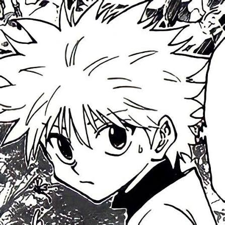
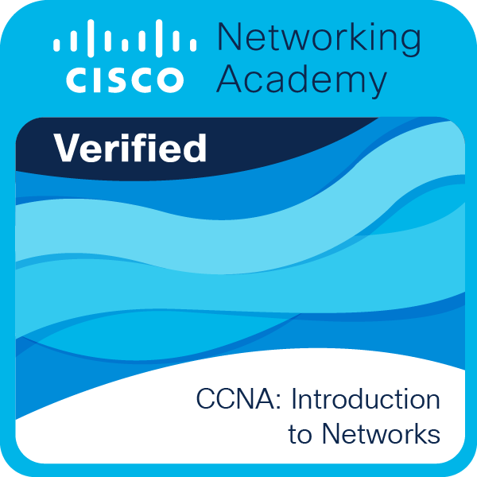
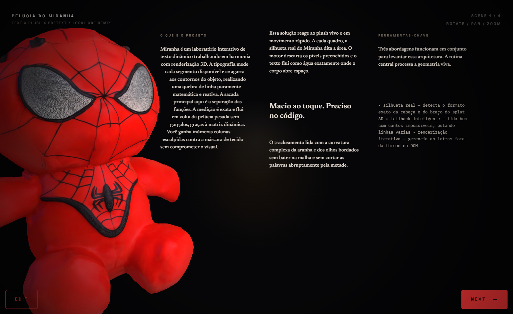
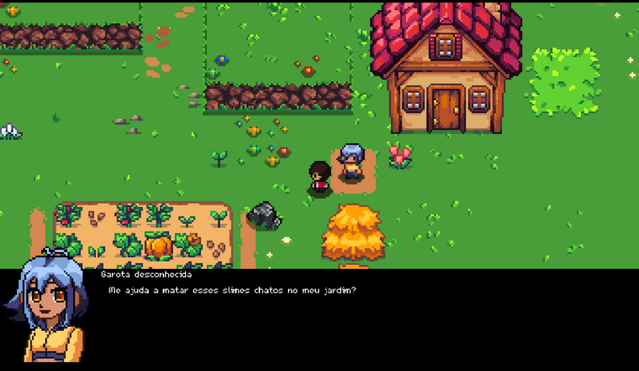

game.development()
Pedro Tescaro
Desenvolvedor Full Stack.
Desenvolvo experiências web, mobile e backend com foco em clareza, desempenho e impacto real.

Sobre mim
Minha trajetória une web, backend e mobile. Atualmente curso Análise e Desenvolvimento de Sistemas na FATEC Ferraz de Vasconcelos e sou técnico em Automação Industrial pelo IFSP, uma formação que fortaleceu minha maneira estruturada de resolver problemas.
Atuei como estagiário de desenvolvimento mobile na Éboli Tecnologia, criando interfaces e funcionalidades em Flutter para aplicações em produção. Também sou criador do Heal+, uma solução com Inteligência Artificial para auxiliar profissionais de saúde no acompanhamento de pacientes com feridas, apresentada na 16ª FETEPS.
“Talk is cheap. Show me the code.”
— Linus Torvalds
(É essa ideia que levo para cada projeto: aprender, construir e transformar conhecimento em algo que funcione na prática.)
Hoje aprofundo meus conhecimentos em React Native, TypeScript, JavaScript, Python e Data/IA. Quero evoluir como desenvolvedor de produtos digitais completos, combinando tecnologia, experiência do usuário e impacto real.
Ferramentas & Software
O ambiente que uso em projetos web, mobile, backend, dados e desenvolvimento de jogos.
// Aplicativos presentes no meu fluxo de desenvolvimento

ai.code.editor
Cursor
android.development
Android Studio
agentic.coding
OpenAI Codex
repositories.gui
GitHub Desktop
containers.desktop
Docker Desktop


Formação
Minha formação reúne tecnologia, automação industrial e desenvolvimento de software em uma trajetória de aprendizado contínuo.
CST em Análise e Desenvolvimento de Sistemas
FATEC — Faculdade de Tecnologia de Ferraz de Vasconcelos
Ensino Médio integrado ao Técnico em Automação Industrial
IFSP — Instituto Federal de São Paulo, campus Suzano
Curso de Informática, Desenvolvimento de Games e Aplicativos
Instituto MEGA Escola — Nível de formação 8
Certificações

IBM
Artificial Intelligence Fundamentals

AWS Academy
AWS Academy Graduate — Cloud Foundations

Cisco Networking Academy
CCNA: Introduction to Networks

Cisco Networking Academy
CCNA: Switching, Routing, and Wireless Essentials

IBM Quantum
Quantum Machine Learning

IBM Skills Network
Data Analysis Using Python
Experiências
Experiências profissionais que fortaleceram minha prática em desenvolvimento, colaboração, comunicação e resolução de problemas.

Éboli Tecnologia
Nov 2024 - Jul 2025
9 meses · Estágio · Remoto
Atuação
Desenvolvedor Mobile
- Desenvolvimento de soluções Android com Flutter e Dart, com foco em interfaces funcionais e boa experiência de uso.
- Participação em reuniões técnicas para alinhamento de demandas, decisões de produto e evolução das entregas.
- Resolução de problemas de compatibilidade, configuração e troubleshooting em cenários reais de desenvolvimento mobile.
Flutter
Dart
Kotlin
Android
UI/UX
Troubleshooting

IFSP Campus Suzano
Mar 2022 - Dez 2022
10 meses · Projeto de Extensão · Presencial
Atuação
Instrutor de Matemática
- Acompanhamento de alunos com dificuldade em Matemática básica por meio de suporte online e presencial.
- Esclarecimento de dúvidas para turmas do Ensino Médio e EJA, adaptando linguagem e abordagem conforme a necessidade.
- Fortalecimento de habilidades de comunicação, didática e mentoria em contexto educacional.
Ensino
Mentoria
Comunicação
Didática
Matemática
04 / trabalhos selecionados
Projetos
Uma seleção de interfaces, produtos e experimentos que transformam ideias em experiências reais.
Web
6 projetos
 01
01

02 03
03
 04
04

08GameMaker · Action RPG
BLUE STAR RPG
Action RPG top-down em pixel art com exploração, evolução do personagem e escolhas que influenciam sua jornada.
 05
05
 07
07
06
Eventos & Comunidade